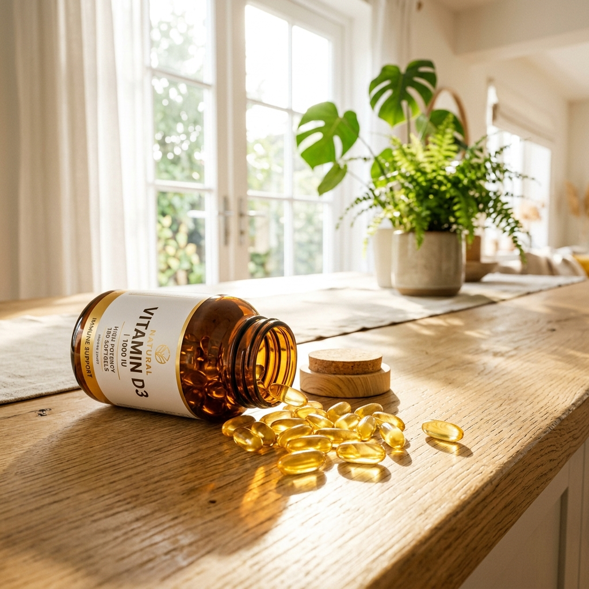

Vitamina D: O Hormônio da Imunidade e Vitalidade

Pin ItApesar do nome, a **Vitamina D** funciona na verdade como um pré-hormônio essencial para o corpo humano. Com o estilo de vida moderno, passado majoritariamente em ambientes fechados, a deficiência de Vitamina D tornou-se uma "epidemia silenciosa", afetando a imunidade e a vitalidade de milhões de pessoas ao redor do mundo.
Se você sente cansaço constante ou adoece com facilidade, entender como níveis adequados de Vitamina D impactam sua saúde é o primeiro passo para retomar sua energia.
Imunidade e Defesa contra Vírus
A Vitamina D modula as respostas imunológicas inatas e adaptativas. Ela fortalece a barreira física contra patógenos e estimula a produção de peptídeos antimicrobianos, sendo um pilar fundamental na prevenção de gripes, resfriados e até doenças autoimunes.
Sistema Imunológico
Ajuda a "treinar" as células de defesa para que elas não ataquem o próprio corpo e combatam invasores.
Saúde Mental e Humor
Existem receptores de vitamina D em áreas do cérebro ligadas à produção de serotonina, o hormônio do bem-estar.
Absorção de Cálcio
Sem Vitamina D, seu corpo absorve apenas uma fração do cálcio ingerido, enfraquecendo os ossos.
A Relação entre Vitamina D e Humor
Estudos mostram que níveis baixos de Vitamina D estão frequentemente associados ao transtorno afetivo sazonal e à baixa produção de serotonina. Manter seus níveis em dia (acima de 30-40 ng/mL) é uma das formas mais naturais de auxiliar no combate à depressão e ansiedade leve.
Exposição Solar vs. Suplementação
Embora o sol seja a fonte primária, fatores como o uso constante de protetor solar, a poluição das grandes cidades e o tempo que passamos em escritórios dificultam a síntese natural. A suplementação orientada de **Vitamina D3** é a forma mais segura e garantida de manter sua saúde blindada durante todo o ano.
☀️ Como Garantir sua Vitamina D?
O ideal é suplementar a Vitamina D3 junto com a K2 para garantir que o cálcio vá para os ossos e não para as artérias. Ver na Shopee
Perguntas Frequentes (FAQ)
1. Qual o melhor horário para tomar?
Por ser uma vitamina lipossolúvel, ela deve ser tomada junto com uma refeição que contenha gordura (como almoço ou jantar) para que a absorção seja máxima.
2. Vitamina D3 ou D2?
A Vitamina D3 (Colecalciferol) é muito mais eficaz para elevar os níveis sanguíneos de forma sustentável do que a D2 (Ergocalciferol).